1×
Ja sagen
Ihr heiratet einmal. Ein Abo passt nicht zu einem einmaligen Tag.
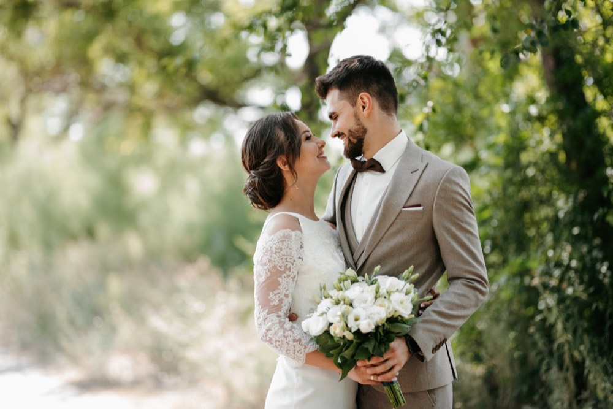
Pinterest-Kampagne für Loveplanr
Ein Paar sagt einmal Ja, erfasst seine Gäste einmal und zahlt einmal. Diese Kampagne erzählt das dort, wo Paare ihre Hochzeit planen: auf Pinterest.
Studentisches Konzept, ZHAW DMSU HS 2026, Team 4. Noch nicht live auf Pinterest und kein offizieller Auftritt von Loveplanr.
1×
Ihr heiratet einmal. Ein Abo passt nicht zu einem einmaligen Tag.
1×
Die Gästeliste entsteht einmal und läuft weiter in Rückmeldungen und Sitzplan.
1×
CHF 149 oder CHF 249, einmalig inkl. MwSt. Ohne Abo und ohne monatliche Kosten.
Ausgangslage
Loveplanr bündelt digitale Hochzeits-Tools auf einer Plattform für Paare im DACH-Raum: Hochzeitswebseite, Rückmeldungen, Gästeliste, Wunschliste, Hochzeitslogo und Fotogalerie mit Gästeupload. Das Komplettpaket ergänzt Gästegruppen, Sitzplan, Checkliste, Budgetrechner und digitale Karten.
Der Unterschied ist das Preismodell: einmal bezahlen, kein Abo. Paare können kostenlos starten: «Erst wenn ihr bereit seid, wählt ihr das passende Paket.»
Der Engpass liegt ganz oben im Funnel, bei Reach und Awareness. Paare suchen nur während der Planung nach solchen Tools und kaufen einmal. Finden sie Loveplanr in dieser Zeit nicht, nehmen sie Gratis-Tools oder einen anderen Anbieter.
Der bisherige Social-Media-Auftritt setzt auf Humor. Das Wertversprechen kommt dort zu kurz.
Loveplanr erscheint auf Pinterest, wenn ein Paar im Planungsfenster sucht. Der Pin führt zur passenden Seite, das Paar startet kostenlos und kauft später ein Paket. Die Kampagne rechnet sich, wenn ein neuer Kunde höchstens 20–30 CHF kostet.
Pinterest funktioniert wie eine visuelle Suchmaschine. Paare suchen dort aktiv nach Begriffen wie «Hochzeitswebseite erstellen» und «Hochzeit Checkliste», und Pins bleiben über Monate auffindbar. Das passt zu einem Fenster, das sich für jedes Paar neu öffnet. Instagram dient nur zum Wiederverwenden der Inhalte.
Käufer · fiktive Persona
Beide berufstätig, mittleres bis gehobenes Budget, heiraten in 6–12 Monaten. Sie wollen den Überblick behalten und sich nicht durch mehrere Tools und Excel-Listen arbeiten.
Was sie überzeugen muss: klarer Preis, kein Abo, alles an einem Ort.
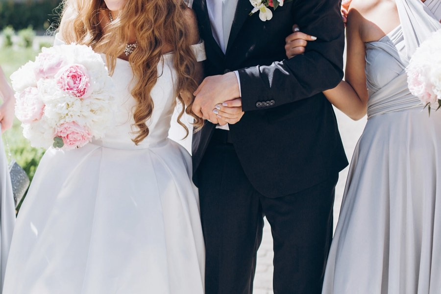
Gast mit Veto · fiktive Persona
Wenig techaffin. Wenn Peter scheitert, ruft Peter das Paar an. Darum entscheidet er mit, obwohl er nichts kauft: Er braucht einen Link, keine App und kein Konto.
Was belegt ist: Fotos laden Gäste laut Loveplanr «ohne App und ohne Registrierung» hoch. Ob das auch für Rückmeldungen gilt, klären wir mit den Gründern.
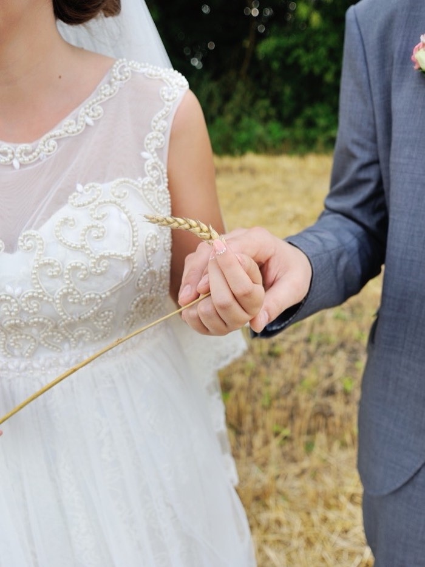
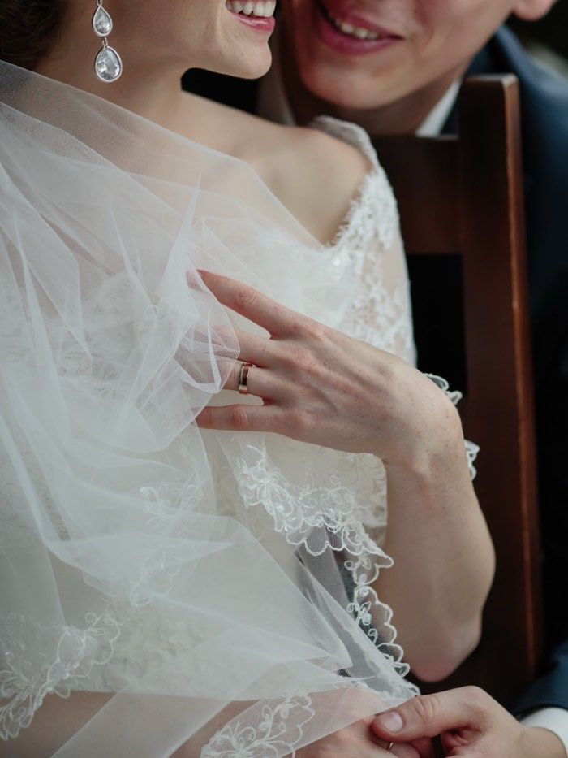
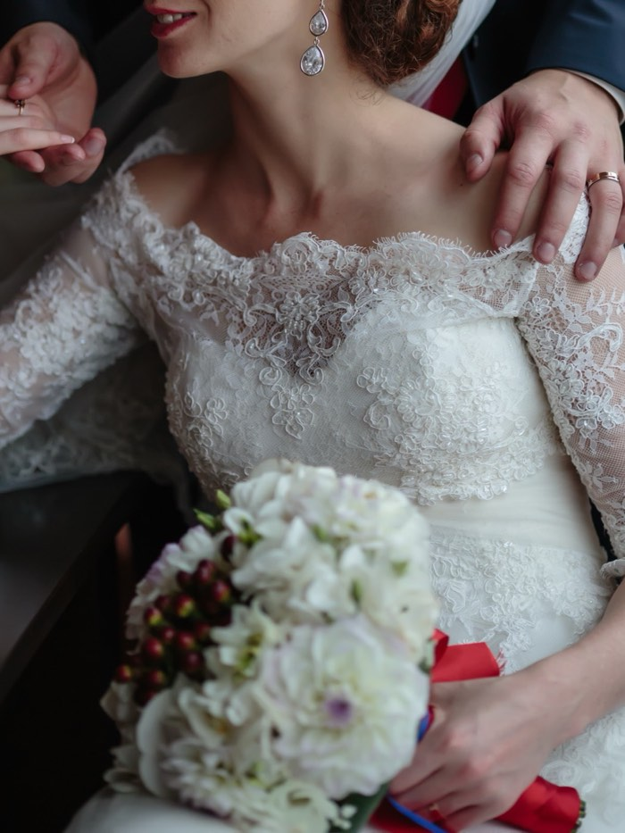
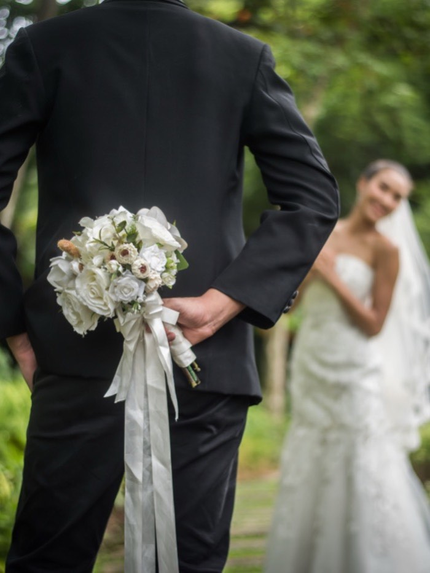
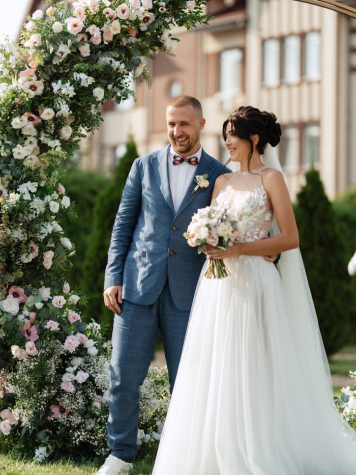
KPIs
| KPI | Frage dahinter | Funnel-Stufe | Quelle | Zielwert |
|---|---|---|---|---|
| Impressions | Werden wir bei passenden Suchen gefunden? | Reach | Pinterest Analytics | Basiswert aus Woche 1–4 |
| Saves | Merken sich Paare den Pin für später? | Awareness | Pinterest Analytics | Basiswert aus Woche 1–4 |
| Outbound-Klicks | Wechselt jemand vom Pin zu Loveplanr? | Interesse | Pinterest Analytics, UTM-Parameter | Basiswert aus Woche 1–4 |
| Checklisten-Anmeldungen | Gibt jemand für Hilfe seine E-Mail-Adresse an? | Lead | Formular der neuen Zielseite | Basiswert ab Start der Zielseite |
| Kosten pro Kunde | Rechnet sich die Kampagne? | Kauf | Ausgaben geteilt durch bezahlte Pakete aus der Kampagne | ≤ 20–30 CHF |
Warum nur ein fixer Zielwert? Für die anderen vier KPIs haben wir keine belastbaren Vergleichszahlen und erfinden keine. Die ersten vier Wochen liefern die Basiswerte, danach setzen Team und Gründer die Ziele.
Wo die Messung schwierig wird. Paare testen zuerst kostenlos und kaufen später. Klick und Kauf können also weit auseinanderliegen. Die Kosten pro Kunde lassen sich erst sauber rechnen, wenn Loveplanr die UTM-Werte bis zum Kauf weiterträgt. Das müssen wir mit den Gründern klären.
Board-Struktur
Hero · Launch-Kampagne
Der laute Moment: drei Pins, die «Einmal reicht» setzen. Sie tragen den USP, und Pin 01 tritt im Promoted-Test gegen einen Hilfe-Pin an.
3 Pins: 01 bis 03
Stand: bereit
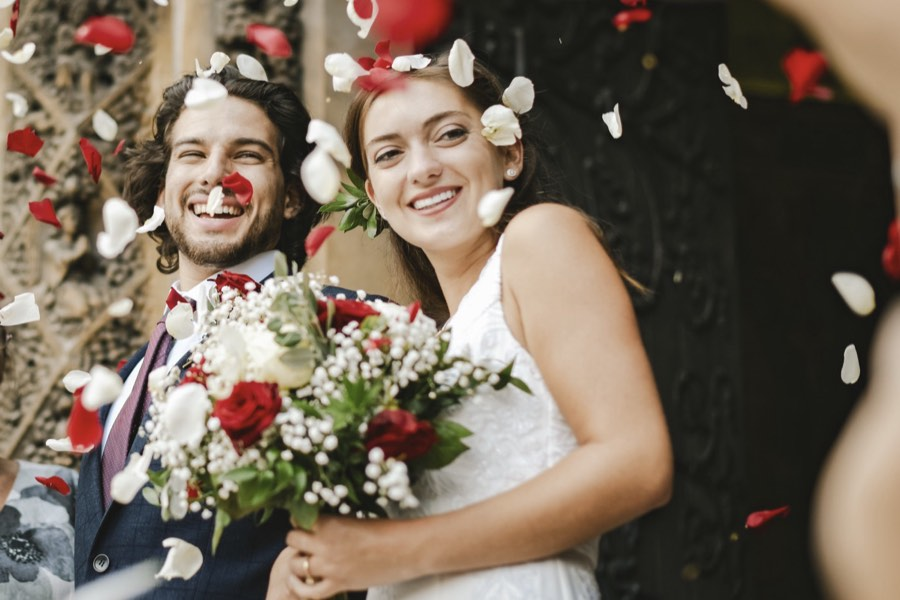
Hub · Echte Geschichten
Der Beweis: echte Aussagen von Paaren. Die Zitate stammen wörtlich von loveplanr.com, die Fotos sind als Symbolbild markiert. Längere Paar-Geschichten, Creatorinnen und Fachleute kommen dazu, sobald Material und Einwilligungen vorliegen.
4 Pins: 04 bis 07
Stand: gestaltet, Freigabe der Zitate offen
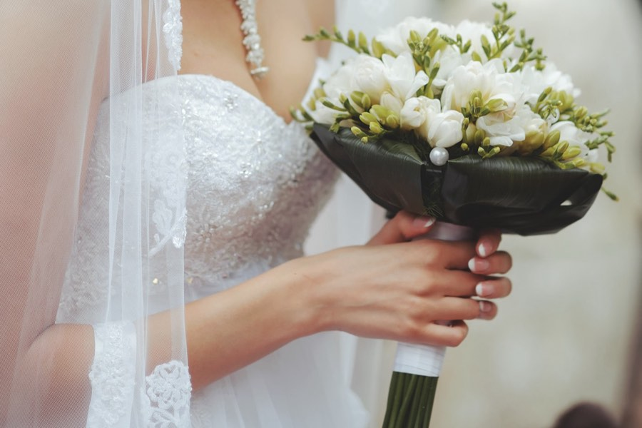
Help · Anleitungen und Checkliste
Das Fundament: Antworten auf konkrete Suchen. Diese Pins bringen über Monate Besuche und stehen darum zuerst im Kalender.
5 Pins: 08 bis 12
Stand: bereit, Pin 08 braucht eine neue Zielseite
Pin-Set
Jeder Pin hat Titel, Beschreibung, Keywords und ein Ziel. Alle sind gestaltet. Die Hub-Pins tragen echte Aussagen von Paaren, wörtlich von loveplanr.com. Da die Stock-Fotos nicht diese Paare zeigen, steht auf dem Bild «Symbolbild». Pin 08 wartet auf seine Zielseite. Alle Pins als CSV (mit UTM-Links).
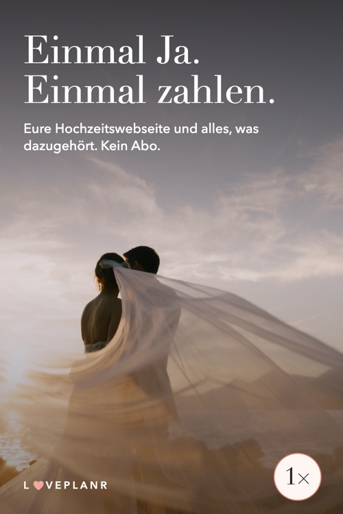
01 · Hero
Hochzeitswebseite, Rückmeldungen, Gästeliste, Wunschliste und Fotogalerie an einem Ort. Ab CHF 149, einmalig und ohne Abo. Kostenlos ausprobieren, Paket erst später wählen.
Keywords: Hochzeitswebseite, Hochzeitswebseite erstellen, Hochzeit planen Schweiz
Prinzip: USP: einmaliger Preis
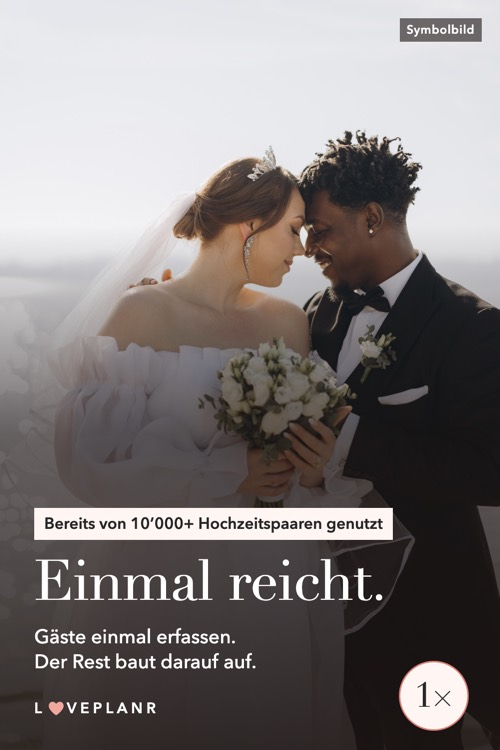
02 · Hero
Bereits von 10’000+ Hochzeitspaaren genutzt. Webseite, Rückmeldungen, Sitzplan, Checkliste, Budget und digitale Karten im Komplettpaket. CHF 249, einmalig und ohne Abo. Die Gästeliste erfasst ihr nur einmal.
Keywords: Hochzeit planen, Hochzeitsplanung Tools, Gästeliste Hochzeit
Prinzip: USP: alles an einem Ort, Social Proof
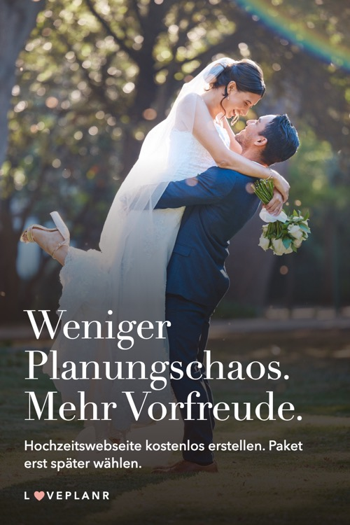
03 · Hero
Startet mit eurer Hochzeitswebseite und testet alle Funktionen in Ruhe. Erst wenn ihr bereit seid, wählt ihr das passende Paket. Einmalig bezahlt, ohne Abo.
Keywords: Hochzeitswebseite erstellen, Hochzeitshomepage, Hochzeit Ideen
Prinzip: Commitment & Consistency
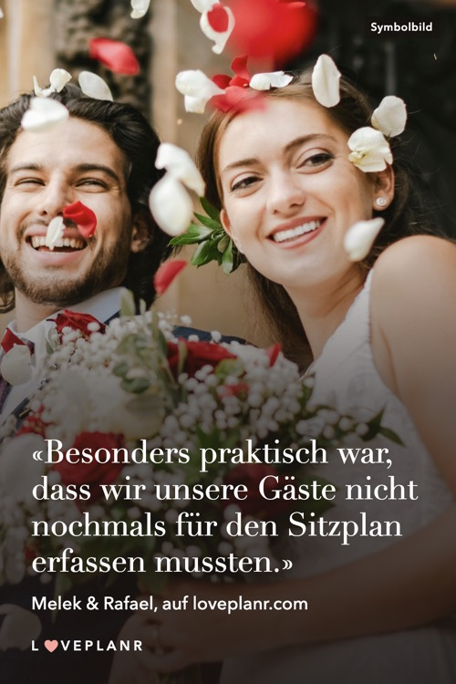
04 · HubFreigabe offen
«Besonders praktisch war, dass wir unsere Gäste nicht nochmals für den Sitzplan erfassen mussten.» Melek & Rafael über Loveplanr. Eure Gästeliste fliesst direkt in den Sitzplan.
Keywords: Sitzplan Hochzeit, Hochzeitsplanung Erfahrungen, Hochzeit Schweiz
Prinzip: Social Proof
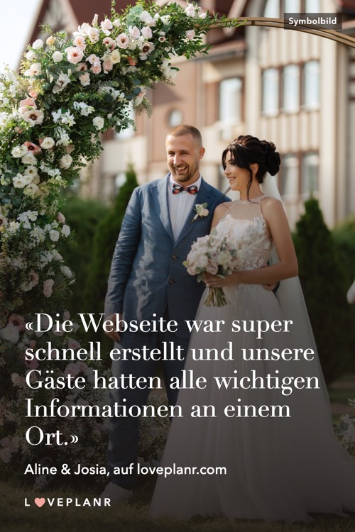
05 · HubFreigabe offen
«Die Webseite war super schnell erstellt und unsere Gäste hatten alle wichtigen Informationen an einem Ort.» Aline & Josia über Loveplanr. Designs ansehen und kostenlos starten.
Keywords: Hochzeitswebseite erstellen, Hochzeitswebseite Beispiele, Hochzeitshomepage Inspiration
Prinzip: Social Proof
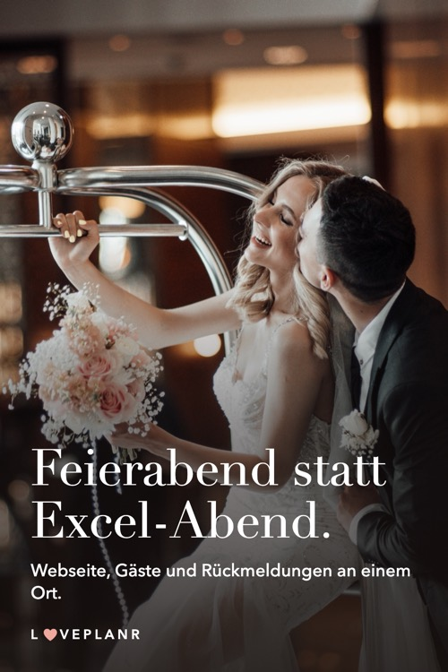
06 · HubStartfassung
«Wir hatten Gästeliste, Sitzplan und Einladungen endlich an einem Ort.» Sabine & Markus über Loveplanr. So bleibt nach der Arbeit mehr Zeit für alles andere als für Tabellen.
Keywords: Hochzeit planen, Hochzeitsvorbereitung, Hochzeitsplanung Tools
Prinzip: Social Proof, später Liking (mit Creatorin)
Später: Video-Pin einer Micro-Creatorin aus der Deutschschweiz, als Partnerschaft gekennzeichnet
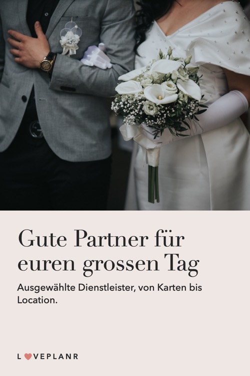
07 · HubStartfassung
Von Hochzeitskarten über Fotografie bis zur Location: Auf dieser Seite findet ihr ausgewählte Partner von Loveplanr.
Keywords: Hochzeit Dienstleister, Hochzeitsplanerin Schweiz, Hochzeitsplanung Tipps
Prinzip: Authority (mit echter Empfehlung)
Später: Empfehlung einer Hochzeitsplanerin oder Feature in einem Hochzeitsmagazin
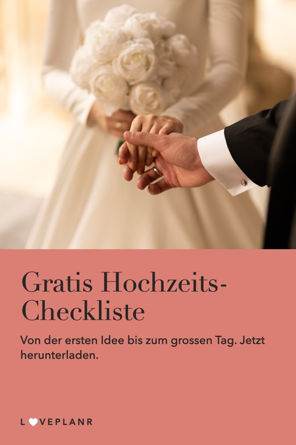
08 · HelpVorschlag
Behaltet den Überblick über eure Hochzeitsplanung: Checkliste gratis per E-Mail erhalten und direkt loslegen.
Keywords: Hochzeit Checkliste, Hochzeitscheckliste, Hochzeit planen Checkliste
Prinzip: Reciprocity
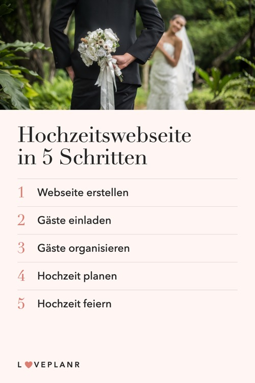
09 · Help
Webseite erstellen, Gäste einladen, Gäste organisieren, Hochzeit planen, Hochzeit feiern. So kommt ihr Schritt für Schritt von der ersten Seite bis zum grossen Tag.
Keywords: Hochzeitswebseite erstellen, Hochzeitswebseite Anleitung, Hochzeit Tipps
Prinzip: Reciprocity (Hilfe ohne Gegenleistung)
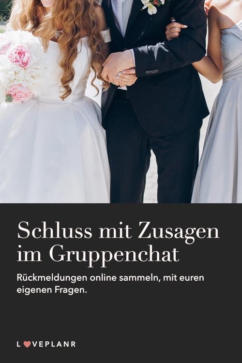
10 · Help
Sammelt Zu- und Absagen eurer Gäste direkt online und stellt eure eigenen Fragen. So bleibt alles an einem Ort und niemand geht im Chat verloren.
Keywords: RSVP Hochzeit, Hochzeit Rückmeldung, Gästeliste Hochzeit
Prinzip: Hilfe-Inhalt
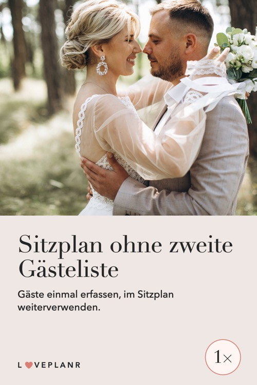
11 · Help
Eure Gästeliste fliesst direkt in den Sitzplan, inklusive druckfertigem Saalplan. Enthalten im Komplettpaket.
Keywords: Sitzplan Hochzeit, Tischplan Hochzeit, Hochzeit Tischordnung
Prinzip: Hilfe-Inhalt
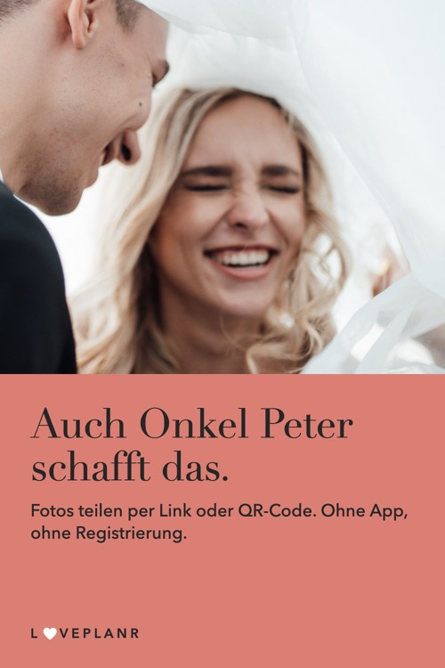
12 · Help
Teilt den Galerie-Link oder QR-Code auf der Einladung oder am Fest. Eure Gäste laden ihre Fotos und Videos hoch, ganz ohne App und ohne Registrierung.
Keywords: Hochzeitsfotos Gäste, Hochzeit Fotogalerie, QR-Code Hochzeit Fotos
Prinzip: Einwand der Gäste auflösen
SEO-Keywords
Diese Liste ist eine begründete Auswahl, kein gemessenes Ranking. Wir zeigen darum keine Suchvolumen. Vor dem Start prüft das Team die Begriffe in Pinterest Trends, falls für die Schweiz verfügbar, und in den Suchvorschlägen von Pinterest. Auch die Schreibweise klären wir dort: Loveplanr verwendet «Hochzeitswebseite» und «Hochzeitswebsite» nebeneinander.
Content-Kalender
Woche 1 beginnt, sobald die Gründer den Start festlegen. Paar-Geschichten und Empfehlungen ergänzen die Hub-Pins, sobald echtes Material vorliegt.
| Woche | Pins | Aufgabe | Danach prüfen |
|---|---|---|---|
| 1 | 09 Fünf Schritte · 10 Rückmeldungen | Profil und drei Boards einrichten, UTM-Links testen | Kommen die Klicks in der Auswertung an? |
| 2 | 11 Sitzplan · 12 Onkel Peter | Help-Board vervollständigen | Erste Impressions pro Keyword-Gruppe |
| 3 | 01 Einmal Ja · 02 Einmal reicht | Launch der Kampagnenidee | Saves und Klicks gegenüber Help-Pins |
| 4 | 03 Mehr Vorfreude | Direkter Weg zur kostenlosen Anmeldung | Basiswerte festhalten, Ziele mit den Gründern setzen |
| 5 | 08 Checkliste · 04 Melek & Rafael | Start Promoted-Test, Checklisten-Zielseite live | Erste Anmeldungen, Ausgaben pro Variante |
| 6 | 05 Aline & Josia | Promoted-Test läuft weiter | Testende, Kosten pro Klick je Variante |
| 7 | 06 Feierabend · 07 Partner | Creatorin und Hochzeitsplanerin für die echte Fassung anfragen | Welche Hub-Themen werden gespeichert? |
| 8 | Beste Pins neu gestaltet | Auswertung, gute Pins für Instagram wiederverwenden | Was bleibt, was fällt weg, wie weiter? |
Zielseiten und Funnel
Eine erfundene Geschichte, die zeigt, wo jede Kennzahl entsteht.
Nach der Arbeit tippt sie auf Pinterest «Hochzeitswebseite erstellen» und sieht den Pin mit den fünf Schritten.
Noch ist es zu früh für eine Entscheidung. Der Pin landet auf ihrem Board und bleibt dort.
Zwei Wochen später öffnen sie den Pin zusammen. Er führt auf die passende Seite, nicht auf die allgemeine Startseite.
Sie bauen ihre Seite, testen alles in Ruhe und wählen erst danach ein Paket.
Am Fest scannt er den QR-Code. Ohne App, ohne Registrierung. Das Paar bekommt keinen Anruf.
| Pin | Zielseite | Was dort passieren soll | Stand |
|---|---|---|---|
| 01 Einmal Ja. Einmal zahlen. | /preise/ | Pakete vergleichen, dann kostenlos starten | Bereit |
| 02 Einmal reicht. | /komplettpaket/ | Komplettpaket verstehen, dann kostenlos starten | Bereit |
| 03 Weniger Planungschaos. Mehr Vorfreude. | app.loveplanr.com/de/sign-up | Konto erstellen und die Seite kostenlos bauen | Bereit |
| 04 «Besonders praktisch war, dass wir unsere Gäste nicht nochmals für den Sitzplan erfassen mussten.» | /sitzplan/ | Sitzplan verstehen, Komplettpaket prüfen | Zitat: Freigabe offen |
| 05 «Die Webseite war super schnell erstellt und unsere Gäste hatten alle wichtigen Informationen an einem Ort.» | /hochzeitswebsite/ | Funktionen ansehen, dann kostenlos starten | Zitat: Freigabe offen |
| 06 Feierabend statt Excel-Abend. | /hochzeitswebsite/ | Funktionen ansehen, dann kostenlos starten | Startfassung |
| 07 Gute Partner für euren grossen Tag | /partner/ | Partner ansehen, Vertrauen aufbauen | Startfassung |
| 08 Gratis Hochzeits-Checkliste | /hochzeitscheckliste/ | E-Mail-Adresse angeben, Checkliste erhalten | Vorschlag: neue Zielseite |
| 09 Hochzeitswebseite in 5 Schritten | /hochzeitswebsite/ | Die Schritte nachlesen, dann kostenlos starten | Bereit |
| 10 Schluss mit Zusagen im Gruppenchat | /rueckmeldung/ | Funktion verstehen, dann kostenlos starten | Bereit |
| 11 Sitzplan ohne zweite Gästeliste | /sitzplan/ | Sitzplan verstehen, Komplettpaket prüfen | Bereit |
| 12 Auch Onkel Peter schafft das. | /gaestefotos/ | Gästefotos verstehen, Einwand der Gäste ist weg | Bereit |
Loveplanr bietet bereits eine Online-Checkliste im Komplettpaket, aber noch keinen freien Download. Wir schlagen eine Zielseite vor, die eine Kurzfassung gegen die E-Mail-Adresse abgibt. Pin 08 wartet auf diese Seite: Bis dahin bleibt die heutige Seite als Link eingetragen, und der Pin geht nicht online.
UTM-Schema: utm_source=pinterest&utm_medium=organic&utm_campaign=einmal-reicht&utm_content=<pin-id>. Promoted-Pins erhalten utm_medium=paid. Die Links auf dieser Website sind bewusst ohne UTM, damit sie die Auswertung nicht verfälschen.
Verhaltensprinzipien
Paare bekommen zuerst etwas Nützliches und geben danach ihre E-Mail-Adresse.
Pin 08, neue Zielseite als Vorschlag
Wer die eigene Seite schon gebaut hat, bleibt eher dabei. Darum zuerst kostenlos erstellen und testen, das Paket erst später wählen.
Pin 03, Wortlaut von Loveplanr
Paare orientieren sich an anderen Paaren. Darum stehen echte Aussagen und die Nutzerzahl von Loveplanr auf den Pins. Später kommen ganze Geschichten mit dem Hinweis «Erstellt mit Loveplanr» dazu.
Pin 02 mit Nutzerzahl, Pins 04 bis 06 mit Zitaten, alles von loveplanr.com
Das Urteil einer Hochzeitsplanerin oder eines Hochzeitsmagazins wiegt mehr als eigene Werbung. Bis zur ersten Zusage verweist der Pin auf die Partner von Loveplanr.
Pin 07, Startfassung
Eine Micro- oder Nano-Creatorin aus der Deutschschweiz zeigt die eigene Planung im Video-Pin, als bezahlte Partnerschaft gekennzeichnet. Bis dahin trägt ein Motiv mit Augenzwinkern den Pin.
Pin 06, Startfassung
«Besonders praktisch war, dass wir unsere Gäste nicht nochmals für den Sitzplan erfassen mussten.»
«Die Webseite war super schnell erstellt und unsere Gäste hatten alle wichtigen Informationen an einem Ort.»
«Wir hatten Gästeliste, Sitzplan und Einladungen endlich an einem Ort.»
Wörtlich von loveplanr.com, abgerufen am 05.11.2026. Nicht von uns erhoben. Die Fotos auf den Pins zeigen nicht diese Paare.
Pins leben über Monate. «Nur noch heute» wäre bald falsch und passt nicht zu einem festen Einmalpreis.
Ausser dem Heiraten teilen die Paare keine gemeinsame Identität, auf die wir uns ehrlich berufen könnten.
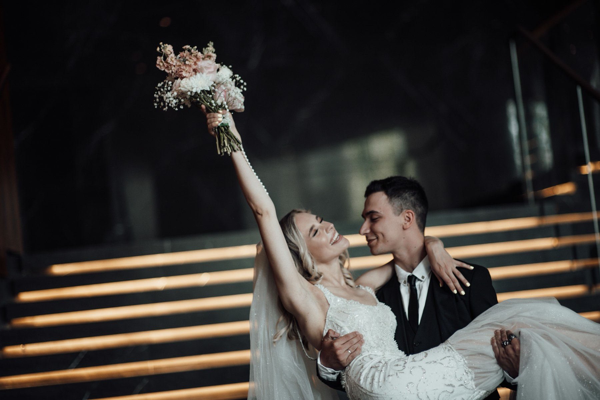
Prozess und Dokumentation
Diese Website ist mit KI entstanden, mit Claude Code. Die Prompts stehen im Wortlaut im Log, jede Änderung ist als Commit belegt, jeder auffällige Fehler festgehalten.